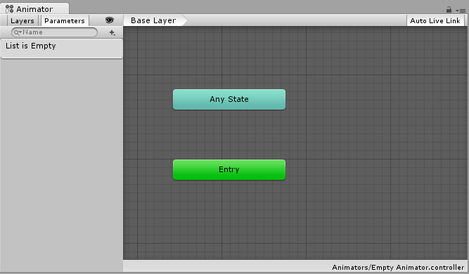
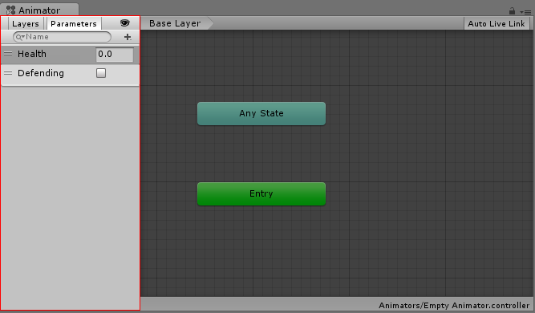
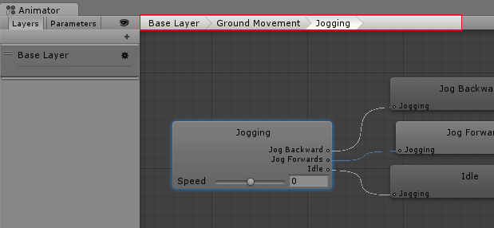

The Animator Window
The Animator Window allows you to create, view and modify Animator Controller assets.

The Animator window has two main sections: the main gridded layout area, and the left-hand Layers & Parameters pane.

The main section with the dark grey grid is the layout area. You can use this area to create, arrange and connect states in your Animator Controller.
You can right-click on the grid to create a new state nodes. Use the middle mouse button or Alt/Option drag to pan the view around. Click to select state nodes to edit them, and click & drag state nodes to rearrange the layout of your state machine.

The left-hand pane can be switched betwen Parameters view and Layers view. The parameters view allows you to create, view and edit the Animator Controller Parameters. These are variables you define that act as inputs into the state machine. To add a parameter, click the Plus icon and select the parameter type from the pop up menu. To delete a parameter, select the parameter in the lists and press the delete key (on macOS use fn-Delete to delete the selected parameter).

When the left-hand pane is switched to Layers view, you can create, view and edit layers within your Animator Controller. This allows you to have multiple layers of animation within a single animation controller working at the same time, each controlled by a separate state machine. A common use of this is to have a separate layer playing upper-body animations over a base layer that controls the general movement animations for a character.
To add a layer, click the plus icon. To delete a layer, select the layer and press the delete key.

Clicking the "eye" icon on or off will show or hide the Parameters & Layers side-pane, allowing you more room to see and edit your state machine.

The "breadcrumb" hierarchical location within the current state machine. States can contain sub-states and trees and these structures can be nested repeatedly. When drilling down into sub states, the hierarchy of parent states and the current state being viewed is listed here. Clicking on the parent states allows you to jump back up to parent states or go straight back to the base layer of the state machine.

Enabling the lock icon will keep the Animator Window focused on the current state machine. When the lock icon is off, clicking a new animator asset or a Game Object with an animator component will switch the Animator Window to show that item's state machine. Locking the window allows you to keep the Animator window showing the same state machine, regardless of which other assets or Game Objects are selected.